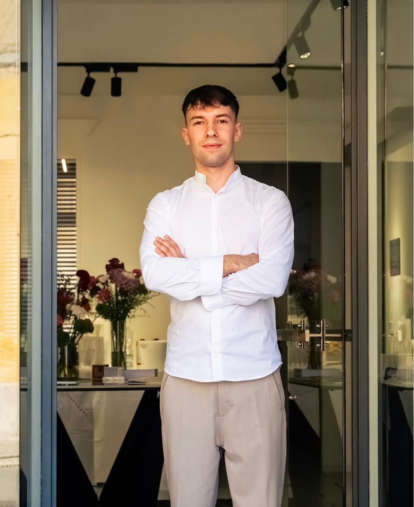

AR Infissi e Serramenti · Certaldo
Chi siamo
Ogni grande progetto nasce da una scelta coraggiosa.
AR Infissi e Serramenti è il risultato della passione, dell’impegno e della determinazione di un giovane imprenditore che ha deciso di costruire un’attività fondata sulla qualità e sulla fiducia.
Nel nostro showroom di Certaldo non offriamo soltanto infissi e serramenti: mettiamo a disposizione competenza, ascolto e consulenza personalizzata per aiutare ogni cliente a trovare la soluzione più adatta alla propria casa.
Selezioniamo con cura i migliori partner e seguiamo ogni progetto con attenzione, dalla scelta dei prodotti fino alla posa in opera, garantendo qualità, sicurezza, design ed efficienza energetica.
Il nostro obiettivo è semplice: diventare un punto di riferimento per chi cerca professionalità, trasparenza e un servizio su misura.

Le nostre radici
La nostra storia
L’inizio di un nuovo progetto
L’azienda nasce nel 2026 da un’idea di Alberto Russo e dall’esperienza di 35 anni di famiglia nel settore, con l’obiettivo di offrire soluzioni innovative e di qualità.
Da una piccola realtà, grazie all’impegno e alla determinazione, prende forma AR Infissi e Serramenti.
Guardiamo al futuro con l’obiettivo di consolidare la nostra presenza sul mercato e diventare un punto di riferimento nel settore, mantenendo al centro i valori di qualità, fiducia e attenzione al cliente.

Qualità in ogni dettaglio
La nostra missione
La missione dell’azienda è offrire prodotti e servizi di alta qualità, pensati per soddisfare al meglio le esigenze dei clienti e creare valore nel tempo. Ci impegniamo a garantire affidabilità, efficienza e attenzione ai dettagli in ogni fase del nostro lavoro.
Un elemento fondamentale è l’innovazione continua: migliorare costantemente processi, soluzioni e risultati, adattandoci ai cambiamenti del mercato e anticipando le nuove esigenze.
Il nostro sguardo sul futuro
La nostra visione
Non ci limitiamo a installare infissi. Realizziamo soluzioni che migliorano la qualità della vita, rendendo ogni ambiente più sicuro, efficiente e accogliente.
Lavoriamo ogni giorno con passione, competenza e attenzione ai dettagli, perché crediamo che la fiducia dei nostri clienti sia il risultato più importante.
Costruiamo valore,
una finestra alla volta.
Contatti
Parliamo del tuo progetto
Sede: Via 2 Giugno 60A, Certaldo
Telefono: +39 3389328320
Email: arinfissitoscana@gmail.com
WhatsApp: +39 3389328320